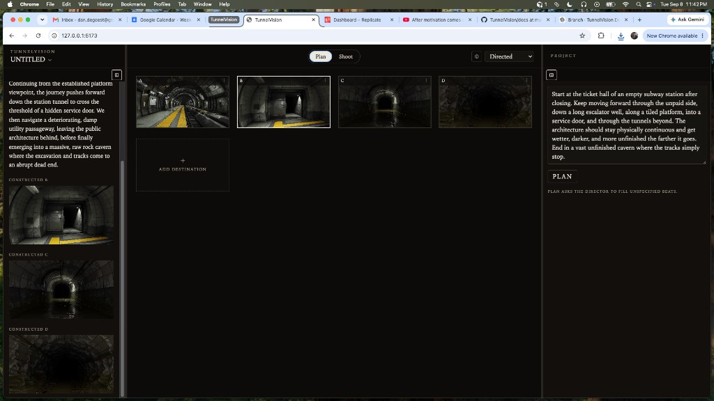
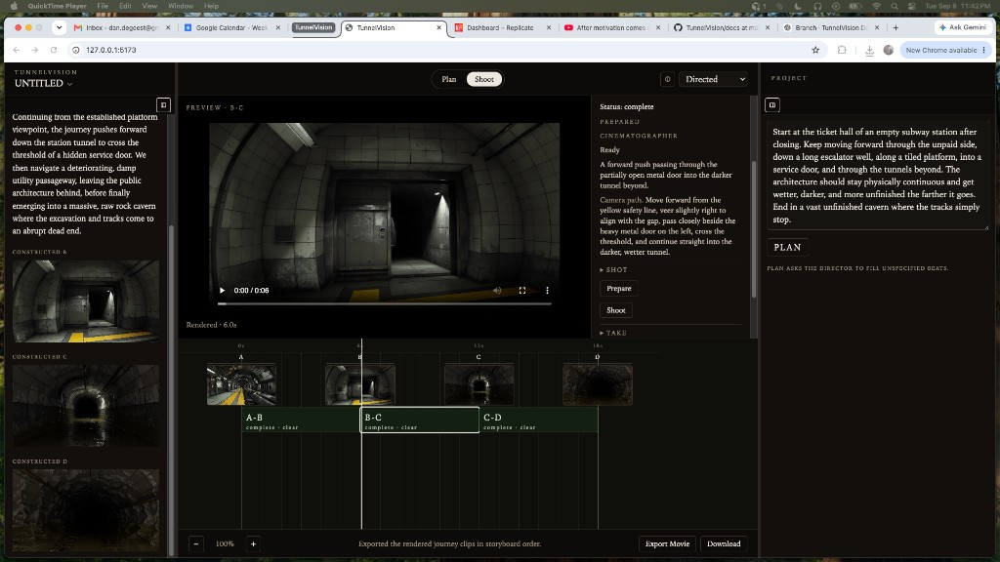

This chapter records the current Plan | Shoot product UI: a new untitled project, conversation as turn history, a Project panel that holds the journey story and PLAN, sequential destination construction, and a Shoot workspace whose production ladder is to block / blocked / shooting / complete. Camotion Phase 1 remains frozen. Forest A→F and Wardrobe remain research fixtures; they do not initialize the running product.
Conversation is history. The Project panel holds the movie.
The left rail is Director and construction turn history. The right Project panel holds the journey story, destination count (AUTO or a typed/stepped number), auto-generate starting destination, auto-generate all destinations, and PLAN. PLAN is the only Director invocation. Add Destination remains structural: it appends an unresolved slot and does not call the Director. It is disabled while PLAN or sequential destination generation is running, because later beats are derived from the preceding actual frame.

Plan — A live untitled project after sequential destination construction. Conversation records constructed A–D. The storyboard is the planning artifact. Add Destination follows the last beat.

Shoot — Actual adjacent destinations become JourneyShots automatically. BLOCK runs the Cinematographer on the selected leg; SHOOT generates that clip. The production ladder is to block / blocked / shooting / complete.
Plan
PARTIALLY SPECIFIED MOVIE
The filmmaker may supply as much or as little of the storyboard as they want before PLAN. AUTO lets the Director choose how many destinations; a number, typed or stepped, adds that many FPO slots. After the first PLAN response the count follows the storyboard. Auto-generate starting destination can create unresolved A from the story. Auto-generate all destinations then constructs B…N in travel order from each preceding actual frame. Construction is sequential; it cannot run in parallel yet because C is derived from constructed B.
The capture is a live subway journey planned and constructed from a filmmaker story, not a research fixture. Specified stills remain authoritative. The Director fills unspecified beats and does not overwrite actual media.
Shoot
PRODUCTION REALITY
Shoot is a production view of the current Project. Consecutive actual adjacent canonicals appear as Destinations / JourneyShots automatically. BLOCK inspects those stills and stores choreography on the selected leg. SHOOT then generates that one clip. Timeline tiles use to block / blocked / shooting / complete, with clear / hold / no go outlines after BLOCK.
The capture still shows the earlier Prepare inspector label. The product action is now Block; related copy uses blocking rather than preparing, and shooting rather than filming.
Watch the live Export Movie outputs
Seven concatenated movies from untitled PLAN | SHOOT sessions on September 8–9, 2026. Each 6s clip is one SHOOT. Export Movie hard-joins the rendered legs. 18s is three legs, 24s is four, 42s is seven. These are product development takes, not Camotion retuning.
01 · Abandoned pool
18s · THREE LEGS
product-slice-04-01-abandoned-pool.mp4 · empty pool hall into the circular chamber
02 · Abandoned pool
18s · THREE LEGS
product-slice-04-02-abandoned-pool.mp4 · second pool export
03 · Orb threshold
24s · FOUR LEGS
product-slice-04-03-orb-threshold.mp4 · circular chamber opening into later volumes
04 · Empty subway
18s · THREE LEGS
product-slice-04-04-empty-subway.mp4 · ticket hall through platform and tunnels; the Plan/Shoot captures above
05 · Service tunnel
18s · THREE LEGS
product-slice-04-05-service-tunnel.mp4 · tiled corridor into unfinished tracks
product-slice-04-07-white-hallway.mp4 · longest assembled export; sterile white corridor to a closed door
This slice records product UI, not a new Camotion result.
Destination construction, Cinematographer inspection, and development video are wired in the product for this live session. Camotion Phase 1 is unchanged. A constructed still is not by itself shootability evidence; BLOCK is the Cinematographer inspection of the actual pair.